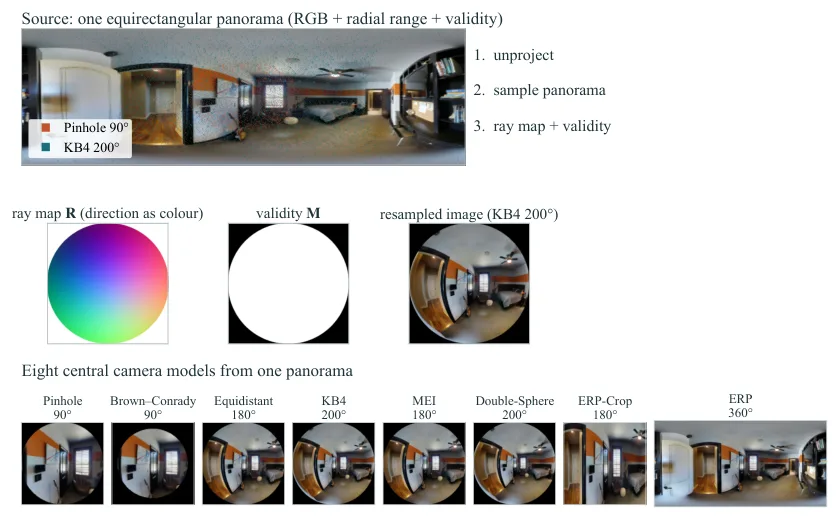
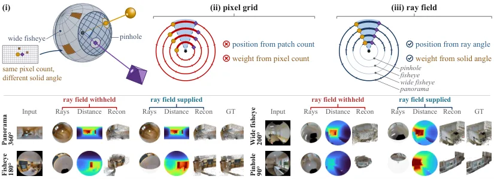
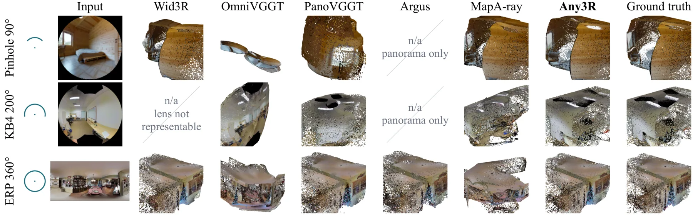
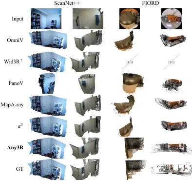
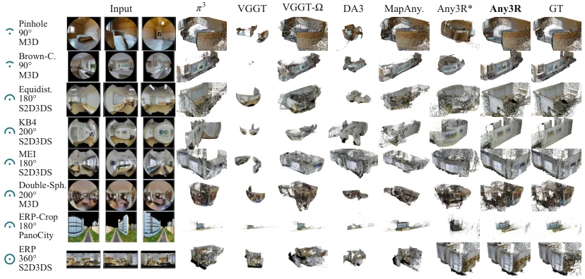

Any3R：面向任意中心相机类型的前馈三维重建
Any3R: Feedforward 3D Reconstruction from Any Camera Type
把「patch 索引 = 空间方向」这条针孔假设换成「patch 射线角 = 空间方向」：角度坐标重写 RoPE、立体角重写点损失权重，一套权重覆盖 8 种训练相机、13 种测试相机。室内全景 Acc 0.054 m（π³ 0.414）、AUC@15 94.5%（π³ 3.5），室外全景 0.663 m；代价是必须给定标定射线场，且位姿提升换来深度精度下降（log10 深度误差 0.033→0.045）。
Acc on indoor ERP
AUC@15 on indoor ERP
Acc on outdoor pinhole
AUC@15 on indoor pinhole
作者、单位与技术谱系 · Research context
作者与单位
研究脉络
- DUSt3R（Wang et al., 2024b）方法基座关系：用单个网络回归公共坐标系下的点图、去掉每场景优化循环，是本文所属「前馈几何」路线的起点；本文沿用其「点图即几何」的输出形式。[论文 §2.1]
- VGGT（Wang et al., 2025）与 VGGT-Ω（2026）直接上游骨干关系：提供交替帧内/帧间注意力的 ViT 与「位姿+深度+点图+跟踪」多头输出；本文不改结构，只把其旋转位置编码的坐标来源替换为射线角。[论文 §2.1 与 §3]
- MapAnything（Keetha et al., 2026）与 OmniVGGT（Peng et al., 2026）同期最接近工作关系：两者都以逐视图内参/位姿为条件，原则上可混合相机；但条件加在针孔编码器之后，无法描述 180° 以上视场。本文把条件加进编码本身。[论文 §1 与 §4.2]
合作网络
- Jingong Chen ↔ Qingwen Zhang ↔ Youming Deng（共同一作）Jingong Chen (SDSU/Aalto) → Qingwen Zhang (KTH)关系：共同署名（equal contribution）[论文首页作者行]
- SDSU ↔ Aalto ↔ KTH ↔ Cornell ↔ Cambridge ↔ KIT（六单位联合署名）South Dakota State University → Aalto University / KTH / Cornell / Cambridge / KIT关系：共同署名（同一论文、六个单位）[论文首页与致谢]
- Any3R → VGGT 骨干（明确技术依赖）Any3R → VGGT（Wang et al., 2025）关系：明确技术依赖（沿用骨干结构、编码与损失）[论文 §2.2 与 §3]
作者单位、共同一作与通讯作者标记、资助编号均来自论文首页与致谢；技术谱系（DUSt3R→VGGT→本文）依据 §2.1 与 §3 的显式表述。原文未说明作者之间的师生或课题组隶属，本文不推断。
方法本质拆解 · What actually changed
是不是微调？
是继续训练而非从零训练：从预训练的 VGGT 系骨干初始化，在 5 个数据集上再训 40 epoch（32 张 GH200、约 27 小时），骨干权重全部更新，没有冻结层，也没有引入新的可训练大模块。新增的只有角度坐标的计算与立体角权重，两者都是无参数的确定性变换，所以「参数变多」不能解释它的增益，消融里的 Any3R* 正是用来排除这一点的。
有没有额外约束？
输入被强制附带标定射线场与有效掩码，网络不再接收镜头类型或畸变系数——这是把「镜头」这一自由度从模型里移出去。几何上有两条硬约束：点的方向由射线场给定，网络只回归沿射线的标量距离，因此点必然落在射线上；角度坐标的归一化因子被设计成在等距柱面网格上精确还原原索引编码，保证预训练先验不丢。损失侧加了立体角权重并按视图均值归一化，使总损失幅值不变。
推理/后端到底做了什么？
推理是单次前馈：每帧读入图像与其射线场，一次前向得到每像素距离、相机位姿与点图，再把多视图点按各自预测位姿融合成一个点云，没有优化、没有分块、没有全局 BA。射线场在推理前由标定一次性算好，不参与梯度。因此它的成本主要在前向计算与显存，而论文没有报告这两项数字，无法判断能否放进实时管线。
方法本质是什么？
本质是把「图像位置」重新定义为「空间方向」：一旦 patch 的位置是射线角、损失的权重是立体角，镜头就退化成同一个球面采样密度的不同分布，网络不必知道自己是针孔还是全景。它改变的不确定性是「镜头假设错误带来的系统性偏差」，而不是随机噪声；它没有做的是估计射线场本身（标定仍是外部输入）、处理非中心相机，以及给出位姿不确定度。
输入多视图图像 + 标定射线场；把 RoPE 的坐标从像素索引换成射线仰角/方位角、把点损失从逐像素等权换成按球面立体角加权；一次前向输出距离、位姿与点图；直接效果是一套权重覆盖 90°–360° 中心相机且全景精度提升近一个量级。

结论与问题Conclusion & Motivation
核心结论
Any3R 的论点是：多相机类型的失败不在解码器，而在骨干的位置编码与监督分布。它用每个像素的单位射线构成稠密射线场，把 patch 的位置从「像素索引」改为「射线角度」，把点的损失权重从「逐像素等权」改为「按球面立体角加权」，于是一套权重同时服务针孔、鱼眼与全景。在 13 种中心相机、3 个数据集上，它用自己的预测位姿做融合仍是综合最准的方法：室内全景 Acc 0.054 m、AUC@15 94.5%，而 π³ 在同格是 0.414 m、3.5%。在针孔这一「主场」它也没有付代价，室外针孔 Acc 1.160 m 优于 π³ 的 1.479 m。唯一让出第一的是室内针孔的 AUC@15（74.8% 对 π³ 76.9%），作者归因于 Stanford2D3DS 上的落后。
动机与问题
要在一帧里覆盖更大范围，最直接的办法是换广角或全景镜头，这类相机在自动驾驶与室内扫描里已经很常见。但现有前馈模型把每一帧都读成针孔图：位置编码用 patch 索引定位，索引在针孔上大致等于方向，在鱼眼上同一个索引指向别处，在 180° 以上甚至无处安放。训练损失同样有偏：它给每个像素相同权重，而鱼眼边缘一个像素覆盖的立体角与中心不同，等于让边缘场景被系统性低估。已有工作用离散镜头 token、冻结骨干外挂适配器、成对对齐、转 cubemap 或在等距柱面图上重训来绕开，但每种只支持固定镜头清单，遇到未见镜头就要重训或加转换步骤；混合同一场景的针孔、鱼眼与全景更难。
方法Method
方法总览
输入是一组视图，每帧附带标定给出的稠密射线场 R（每像素单位方向）与有效掩码 M，网络看不到镜头类型与畸变系数。解码端每个像素只回归一个沿射线的距离 d，点坐标为 X = d·R，因此一个解码器就能覆盖 90° 甚至更大的离轴角。训练时每个视图随机抽一个相机模型（8 种：针孔、Brown–Conrady、等距、Kannala–Brandt、MEI、双球、等距柱面、裁剪等距柱面），视场 30°–360°，每个样本的视图数从 2 到 8 随机，因此一个 batch 里常同时出现窄视场与整球。骨干保持交替帧内/帧间注意力的 ViT 结构不变，只把旋转位置编码的坐标来源与点损失的权重换成射线场推导量，目标函数仍是原骨干的相机/深度/点三项，不加辅助损失。
关键技术细节
角度坐标的构造是：先把 patch 内像素的射线取平均并归一化得 r̄_ij，算仰角 θ=arcsin(−r̄_y) 与方位角 φ=atan2(r̄_x, r̄_z)，再映射成 c_lat = (H_p/m)(1−2θ/π)−1、c_lon = (W_p/m)(φ/π+1)−1。这两个前置因子的选择不是任意的：只有取 H_p/m 与 W_p/m 时，等距柱面网格上的角度坐标才逐项还原原来的索引坐标，从而完整保留预训练的编码——这句话是全文最关键的设计约束，也是「复用预训练 RoPE 必须精确复现」的由来。实现上，8 个低频通道用式(4) 除以 π/2 与 π，另外 8 个高频通道改用该视图自身的半幅角 θ̂、φ̂ 归一化，让坐标铺满各相机自己的视场。立体角权重的计算是对射线场求偏导后取叉积模长（有限差分，边界单侧），再按该视图有效像素均值归一化，保证损失幅值与学习率调度不变、只改变监督的分布；权重不带梯度，并在归一化前把 dΩ 截断到批内 1% 与 99% 分位。

实验Experiments
实验设置
训练 40 epoch、32 张 GH200、约 27 小时，数据为 Matterport3D、Stanford2D3DS、Structured3D、PanoCity 与 DL3DV 视频，测试场景全部留出。评测用两个室内集（Matterport3D、Stanford2D3DS）与一个室外集（PanoCity），每集 24 个场景、每场景 3 视图，同一场景用 13 种中心相机模型渲染（8 种训练内、5 种留出），因此两列结果的差异只来自镜头。指标是重建点云到最近真值点的平均距离 Acc（经相似变换与 ICP 精化）与成对位姿误差的 AUC@15°/30°，所有方法都用自己的预测位姿融合。对照分两组：专为其他相机设计的方法（OmniVGGT、Wid3R、PanoVGGT、Argus、喂真值射线场的 MapAnything）与针孔几何基础模型（π³、MapAnything、DA3、VGGT、VGGT-Ω）。
实验数字与比较
Table 1 对比专为其他相机设计的方法：室内全景（ERP 360°）Any3R Acc 0.054 m、AUC@15 94.5%、AUC@30 96.6%，PanoVGGT 0.072 m / 89.2% / 93.2%，Argus 0.094 m / 88.4% / 91.3%，Wid3R 0.101 m / 85.3% / 89.0%；室内 200° KB4 镜头 Any3R 0.056 m，而 Wid3R 与 Argus 无法表示该镜头（表中为 –）。Table 3 对比针孔基础模型：室内针孔 Acc 0.076 m（π³ 0.084、VGGT-Ω 0.149、VGGT 0.270），室外针孔 1.160 m（π³ 1.479、MapAnything 1.485）；室内全景 π³ 0.414 m、AUC@30 仅 14.1%，本文 0.054 m、96.6%。Table 2 是真实镜头零样本：FIORD 的 200° 鱼眼上 Any3R Acc 0.274 m、AUC@30 78.4%，次优 PanoVGGT 0.511 m / 51.2%；ScanNet++ 的 146° 鱼眼上 Any3R 0.055 m / 79.7%，低于在 ScanNet++ 上训练过的 Wid3R（0.039 m / 92.6%）。
消融/失败边界
角度坐标、绝对位置通路与径向解码读的是同一个射线场，无法逐个关闭，所以 Table 3 里的 Any3R*（去掉射线场、按等距柱面网格假设）是它们的联合消融：室内针孔 Acc 从 0.076 掉到 0.282 m、AUC@15 从 74.8% 掉到 24.0%，室外从 1.160 掉到 2.079 m，说明增益确实来自射线场而不是参数变多。Table 4 在完整全景序列上单独拆两个剩余选择：只用角度坐标（M3D AUC 0.364、R_med 9.26°）→ 加逐视图射线场（0.492 / 7.13°）→ 再加立体角（0.528 / 6.90°），立体角单独用只有 0.380；代价是全套打开后 Matterport3D 的平均 log10 深度误差从 0.033 升到 0.045，作者明确说「用深度换位姿」。失败边界有三条：射线场由标定给出，未标定或畸变参数错误时不在讨论范围；只覆盖中心相机（所有射线过同一点），非中心折反射不适用；Any3R* 在等距柱面网格上仍与完整模型重合（0.054 m 对 0.054 m），说明它的鲁棒性建立在「网格假设正确」这一条件上。
局限与迁移Limitations & Transfer
局限与待核验
作者承认的限制包括：位姿提升以深度精度为代价（log10 误差 0.033→0.045），以及模型仍是前馈回归、依赖训练分布中的相机类型覆盖。我们自己要补三个问号。第一，射线场是输入，不是被估计量——真实部署里镜头标定误差如何传播到 Acc 与 AUC，全文没有敏感性实验，而这恰恰是鱼眼/全景落地时最大的不确定源。第二，Table 1 与 Table 3 的对照并非完全同集：专为其他相机设计的方法只覆盖它们支持的镜头列，跨表比较必须按列对齐，不能取「全表最优」。第三，训练用了 32 张 GH200 与 5 个数据集（含 DL3DV 视频），普通实验室复现成本高，且论文未报告推理时延与显存，无法判断能否嵌进在线 SLAM 前端。
与你研究路线的关系
它对我们最大的启发是「把坐标与权重的物理含义写进网络，而不是写进预处理」。我们做多传感器融合时，经常在预处理阶段把鱼眼/全景裁成针孔、或把不同传感器投到同一栅格，损失的信息不会被后面的估计器知道；Any3R 的做法是让编码器直接读射线角、让损失按立体角计权，等价于把「每个测量覆盖多少场景」显式建模。可迁移模块有两个：一是射线场→角度坐标的映射（尤其那个「在等距柱面网格上必须精确复现原编码」的约束，是复用预训练权重的必要条件）；二是立体角归一化权重，它可以原样搬到我们自己的重投影/光度损失里，用来处理视场边缘像素被系统性低估的问题。下一步实验可以这样设计：取一段带鱼眼与针孔混合的序列，固定骨干与训练预算，比较「预投影成针孔」与「喂射线场」两种前端在同等位姿输入下的深度 Acc 与位姿 AUC，并单独扫描标定误差（0.5°/1°/2°）看哪种方案先退化。







